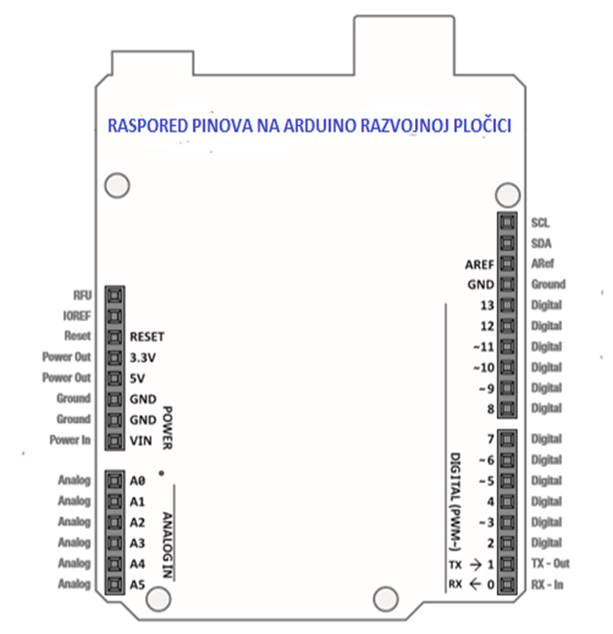
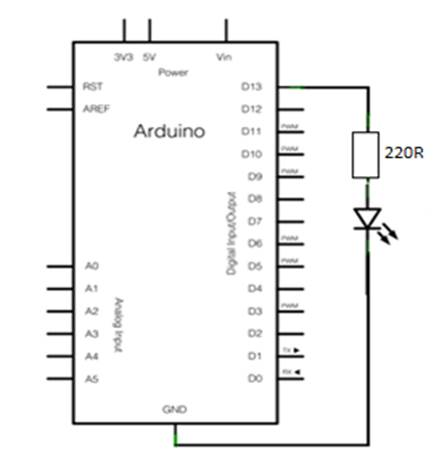
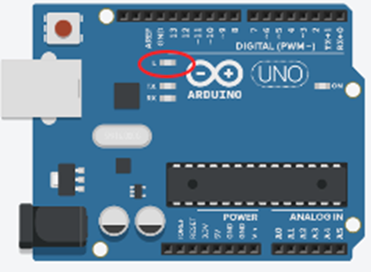

VJ1-Bljeskanje LED diode
Arduino Uno je jedna od najpoznatijih razvojnih platformi za edukaciju u svijetu. Koriste ga hobisti, elektroničari svih generacija kao i učitelji za edukaciju od osnovne škole do fakulteta. Programski jezik Arduina je modificirani C/C++ jezik s mnoštvom već ugrađenih funkcija tako da nam uvelike olakšava programiranje. Arduino jezik
Vježbe ćemo izvoditi u Tinkercadu. Tinkercad

1.1 Minimalni program koji možemo pokrenuti na Arduinu.(engl. BareMinimum)
void setup() {
// put your setup code here, to run once:
}
void loop() {
// put your main code here, to run repeatedly:
}
Ovaj program ne radi ništa.
1.2 Bljeskanje LED diode.
U većini programskih jezika prvi program koji napišemo ispisuje na ekran "Pozdrav svijete". Arduino Uno nema ekran pa ćemo kao prvi program napisati program za bljeskanje LED diode.
Arduino UNO ima ugrađenu LED diodu spojenu s pinom 13 oznake L . Pronađite oznaku L.
Električna shema

Montažna shema

Upišite sljedeći program.
void setup() {
pinMode( 13, OUTPUT);
}
void loop() {
digitalWrite( 13, HIGH);
delay(1000);
digitalWrite( 13, LOW);
delay(1000);
}
Objašnjenje koda.
SVAKI Arduino program MORA sadržavati funkciju setup() i loop()
Svaku od tih funkcija moramo napisati SAMO JEDNOM u programu.
Komentar za jedan redak započinje s dvije kose crte // .
Operator = nazivamo operatorom pridruživanja ili dodjeljivanja.( NIJE ZNAK JEDNAKO!!! )
setup() je funkcija koja se izvršava samo jednom. (moramo napisati jednom)
loop() je funkcija koja se izvršava beskonačno. (moramo napisati jednom)
Unutar funkcija nalaze se naredbe koje moraju započeti i završiti vitičastom zagradom
{
// blok naredbi
}
delay () ,je funkcija koja privremeno zaustavlja izvršenje programa (pauza)
Sintaksa: delay (vrijednost).
Argumenti: vrijednost je cijeli broj u milisekundama.
pinMode() ,konfigurira digitalni pin kao ulazni ili izlazni
Sintaksa: pinMode (pin, mod)
Argumenti: pin: broj pina, mod: INPUT ili OUTPUT (tj. ulazni ili izlazni)
digitalWrite() ,upisuje ili HIGH (binarno 1) na digitalnom pinu ili LOW (binarno 0) na digitalnom pinu.
Sintaksa: digitalWrite (pin, vrijednost).
Argumenti: pin je broj pina, vrijednost: HIGH ili LOW (HIGH je binarna 1 ,a LOW binarna 0)
Ako upišemo HIGH pin će biti na 5V , a ako upišemo LOW na 0V. Bez funkcije pinMode() neće ispravno raditi.
Možemo zaključiti da funkcijom digitalWrite() zapravo upravljamo naponom na pinu (0V ili 5V).